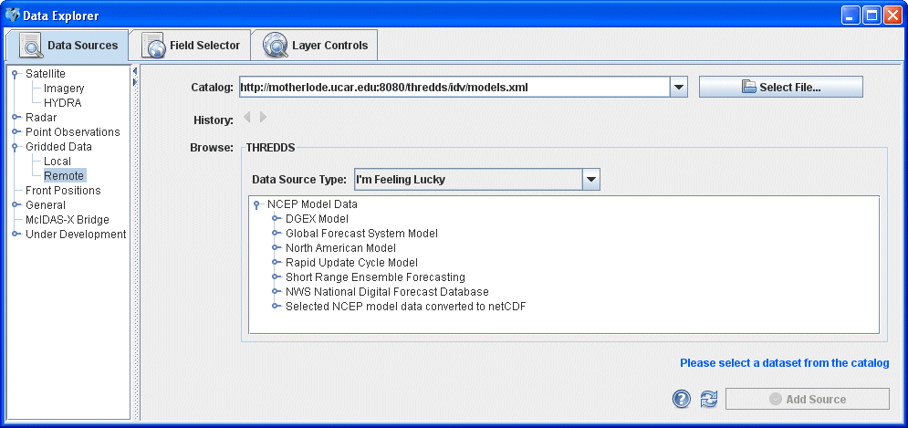
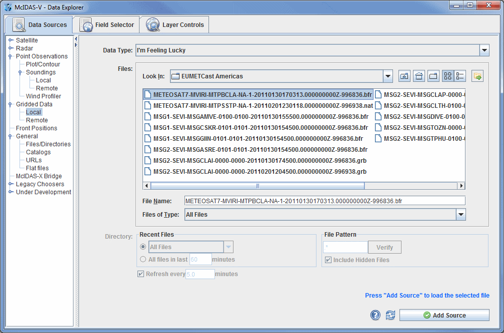

Choosing Gridded Data
The Gridded Data->Remote chooser shows THREDDS catalogs
of gridded data holdings on remote data servers (typically TDS or OPeNDAP).
The pulldown menu has several catalog options. For more information on using
this chooser to display grid data, see Getting
Started - Displaying Gridded Data.

Image 1: Remote Grid Chooser
Properties
- Catalog - Represents the catalog you are getting your data from. Enter in a catalog URL (and hit Enter or click
 Refresh ) or select a catalog URL from the pull down menu. Use the button to select a catalog on your local disk.
Refresh ) or select a catalog URL from the pull down menu. Use the button to select a catalog on your local disk.
- History - Switches back and forth between selected catalogs by using the and buttons.
- Data Source Type - Represents the type of file. If left as "I'm Feeling Lucky", McIDAS-V will figure out what kind of data is in the file by the URL itself. This can be overridden by selecting the type of data the file contains from the pull down menu. For more information, see the list of data formats and sources that are available.
- Tree Structure - Contains individual model runs for each of the parent models. Open the tree structure by clicking on the (
 ) tab icon. Clicking on a data source will enable the
) tab icon. Clicking on a data source will enable the  button.
button.
- Show Thumbnail Images - Shows thumbnails in the THREDDS catalog if available.
 Help - Brings up this help page.
Help - Brings up this help page.- Refresh - Updates the catalog chooser with the most recent data.
- - Loads the selected data.
The following image displays the Gridded Data->Local chooser:

Image 2: Local Grid Chooser
Properties
- Data Type - Selects the data type of the data. If left as "I'm Feeling Lucky", McIDAS-V will figure out what kind of data is in the file by the filename itself. This can be overridden by selecting the type of data the file contains from the pull down menu. For more information, see the list of available data source types.
- Look In - Selects folders to search for data files via the pulldown menu, or you can double-click on folder names.
 Up One Level - Moves you up one folder level in your local file system.
Up One Level - Moves you up one folder level in your local file system. Desktop - Takes you to the Desktop folder of your local file system.
Desktop - Takes you to the Desktop folder of your local file system. Create New Folder - Creates a new folder.
Create New Folder - Creates a new folder. List - Switches the view to a listing of all folders and files in the current path.
List - Switches the view to a listing of all folders and files in the current path. Details - Switches the view to a detailed list of all folders and files in the current path.
Details - Switches the view to a detailed list of all folders and files in the current path.- Show History Menu - Shows a list of the last 15 folders that data was loaded from.
- File Name - Represents the name of the file. Select a file to populate the entry box to show the full name of the file selected.
- Files of Type - Narrows down the files shown in a folder to a specific data type.
- Recent Files - Lists up to the twenty most recent files. Choose the number of files you want to search for by an absolute number, or by the files that have been updated in a certain number of minutes.
- Refresh - Updates automatically the files and their associated displays. Change the number of minutes to control the update frequency.
- File Pattern - Selects the file pattern for the files you want to poll on.
- Verify - Verifies the files that will be scanned.
- Include Hidden Files - Includes hidden files in the polling.
- Help - Brings up this help page.
- Refresh - Rescans the current directory and update the file chooser if the files have changed.
- - Loads the file(s) selected. The data file(s) will appear in the Field Selector tab.